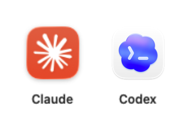
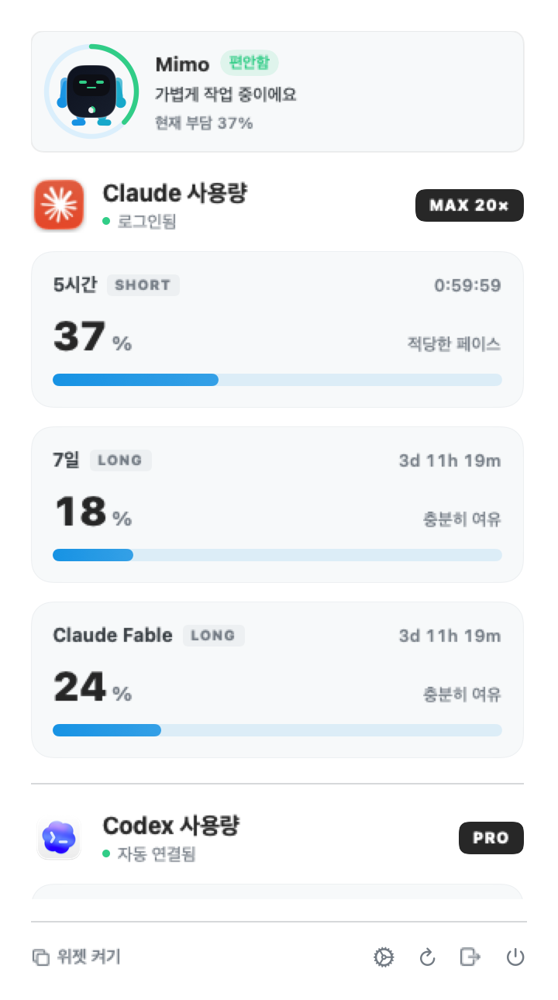
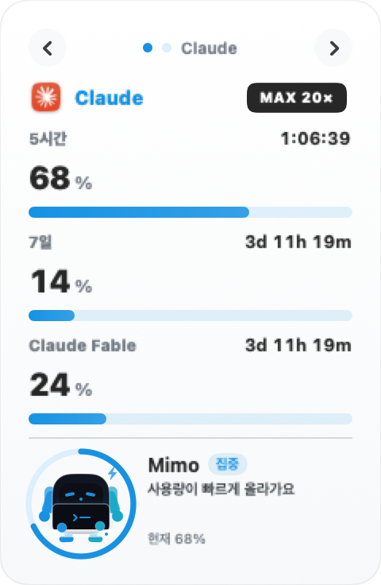
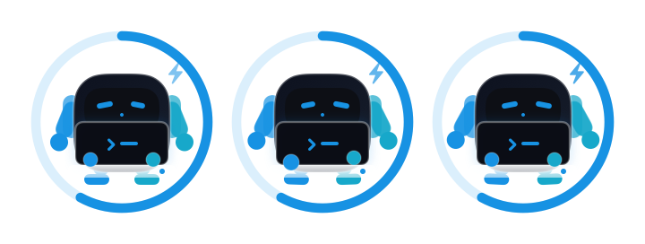

5시간단기 한도와 리셋
주간Claude·Codex 장기 한도
모델별Fable과 서버 제공 모델
오늘 토큰두 서비스 합산 추이
두 계정, 한 화면
웹을 오가지 않아도
남은 여유가 보입니다.
Claude와 Codex를 독립적으로 조회합니다. 한쪽 연결이 끊겨도 다른 쪽 사용량은 그대로 유지됩니다.

- Claude
- 5시간, 7일, Fable과 모델별 한도
- Codex
- 5시간, 주간, 모델별 한도와 초기화권
- Mimo
- 현재 부담과 최근 속도를 표정과 말로 안내

내 화면에 맞게
세로, 가로, 전환, 분리.
작업 공간과 확인 습관에 맞춰 네 가지 위젯 배치를 고를 수 있습니다.


숫자를 읽어주는 Mimo
많이 썼다면 쉬고,
속도가 붙으면 함께 달립니다.
현재 퍼센트만 보지 않고, 선택한 경우 최근 14일의 증가 속도까지 함께 살펴 상태와 대사를 바꿉니다.
편안함집중과열회복
로컬 우선
대화 내용 대신
필요한 숫자만.
프롬프트, 응답, 프로젝트명은 저장하지 않습니다. 사용량 기록은 기본으로 꺼져 있고, 켠 경우에도 이 Mac에만 최대 14일 보관됩니다.
데이터·정책 문서 보기
Claude 한도claude.ai 세션Keychain
Codex 한도codex app-server토큰 복사 없음
오늘 토큰로컬 로그 + 계정 버킷내용 미저장
Mimo 추이선택형 로컬 기록최대 14일
설치 전 확인
Codex 앱은 켜 둘 필요가 없습니다.
ChatGPT/Codex 앱 또는 호환 Codex 실행 파일이 설치되어 있고 로그인되어 있으면 됩니다. ClaudeUsage가 조회할 때 로컬 codex app-server를 직접 시작합니다.
macOS 13 이상
Intel·Apple Silicon
Codex 설치 + 로그인
- 1DMG 다운로드
현재 버전은 v1.3.2입니다.
- 2Applications로 이동
아이콘을 폴더로 드래그합니다.
- 3처음 한 번 열기 허용
서명되지 않은 오픈소스 앱 안내를 확인합니다.
ClaudeUsage 1.3.2무료 · MIT License · 3.5MB
DMG 받기